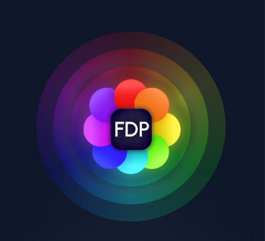

Minecraft All Hack Client
(Music👆👆👆) 你好,这里是一个汇集了各Minecraft hack Client的网站 你可以参考资料 部分客户端会提供下载链接
祝你每天都开心！ ------by cs2dy/CheungTszon
Styles Client
Dev:cubk
Version:All Version
"80元杀穿方块人 的历史 你可曾听过?"
官网"styles.wtf"(已失效)
cubk的传奇事迹 曾经开发styles客户端殴打各大服务器...
styles client在hyt也同样强势 仅仅略色于一些专攻hyt的客户端(毕竟不是专绕GRIM的Client)
但是只持续了两年左右 在b48版本时cubk表明将移除所有的花雨庭绕过...
但这已经是好久以前的事情了 现在 风格客户端依旧80r 而不同的是现在它转向绕过Hypixel
并且绕过依旧nb(伟大的cubk仍在发力) 这又何尝不是一种新生呢？
Southside Client
Dev:Paimom
Version:1.8.9~1.12.2
"在那个夏天的花雨庭里 有很多天才客户端 但它们的dev都叫我是天才……"

南方客户端 - 一款效力于绕过Grim的客户端
有着许多的功能 其独特的code手法让它在hyt占尽了风头
现如今的BallAura可以使您对刀更有优势 这就是由Southside Client开发出来的
不得不说 确实是十分的厉害 在2024,2023时的hyt都是统治级别的 当你看到聊天框出现
"你已被southside客户端击毙"时就要小心了...
本以为它在2024年跑路后就会与许多客户端一样了无音讯
可就在今年的下半年 它复活了！并一跃成为t0客户端 而且源码开源免费获取 链接我放在下面了
我只能说"是金子到哪都会发光"
LiquidBounce Client
Dev:CCBlueX
Version:1.8.9
一个开源免费的1.8.9客户端 水影的伟大无须多言了吧？
从b1到如今的b100 它陪着我们经历了许多 在2022-2023时期花雨庭的许多客户端都是魔改水影
现在我们熟知的许多客户端如
FDPClient NightX
等等都是由水影魔改而来 但是这个客户端并未采用mcp版本 而是更适合新手的mod形式
更是有着高版本的模组 甚至还做出了自己的启动器 也是十分的厉害了
水影下载|官网↓ ↓ ↓
FDP Client
Dev:Zywl
Version:1

fdp作为一个基于水影魔改出的client 其在绕过和hvh能力上十分出色
fdp没什么可说的 一款很大众的客户端
fdp官网|下载↓ ↓ ↓